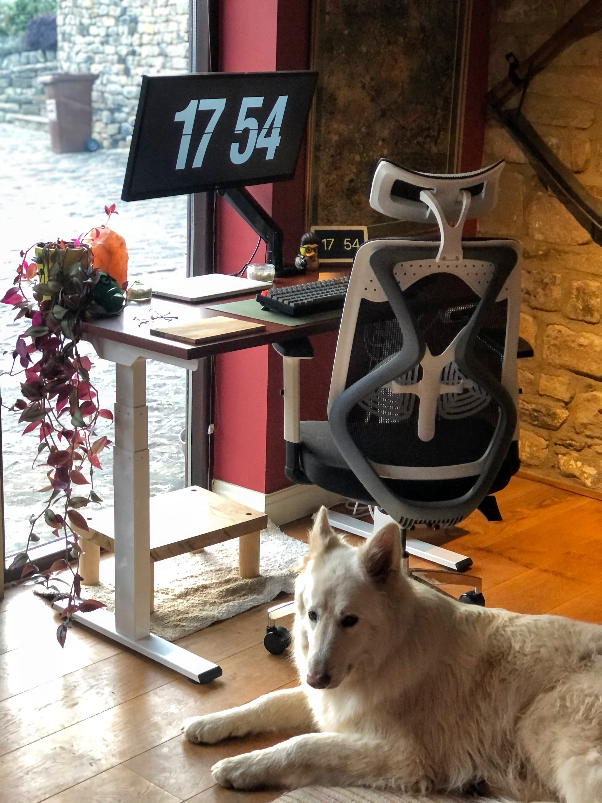

Lets re-wind the clock to 2016, I was working as an Online Customer Service Manager for a small company who sold luxury travel goods. I loved the job, the people I worked with and where I was in my life but I realised that progression, a career progression was never going to happen unless I made a pretty big change.
I wasn't sure at the time what the change looked like but my colleague told me stories of her partner who was a Developer, how he loved his job, worked on really interesting prodjects where he could use creativity to solve the clients needs. Plus, his work benefits were the dream.
So I looked into Developer jobs but found that the majority of entry level positions here in the UK asked for a bachelors degree minimum. Well I didn't have that and I couldn't afford to leave work for a bootcamp course either. So I decided the best bet was to look at a degree.
I enrolled with the Open University in October of that year, I decided to take the Computer Science with the Design option so I could learn more about design and development. I studied full time whilst working and split the last year into two so I could ensure to give it my best.
In December 2020 I got my degree but in reality, that degree, did not prepare me for the skills I needed to have to actually land a job.
The Hard Work Starts After The Degree
I, like many others, realised that getting a degree does not mean you'll instantly get a new job, especailly not the job you want. After getting my degree I focused on applying for jobs, to at least test how hard these entry level interviews were. Thats when it hit me, it was really hard.
In all my four years studying the level of skill needed to pass these entry level tests was beyond what I had learnt and I immediately felt defeated. So I worked harder. Took online courses and practiced for these tests using sites like Codecademy.
How Much Work Is Enough Work?
Truth is, daily practice is the key. I will admit that I have not managed it everyday.
 Ghost gaurding the desk setup like the good boy he is.My best advice for people in my position is the following:
Finally, I want you guys to know that you really do need to love Development to want to succeed in it. Like with other high skilled professions, you need to practice regulary to increase your skills and keep them sharp. Without the love for the craft it makes that process that much harder. If you don't think you love it there are other brances of STEM you might. Don't be affraid to look at the big picture.